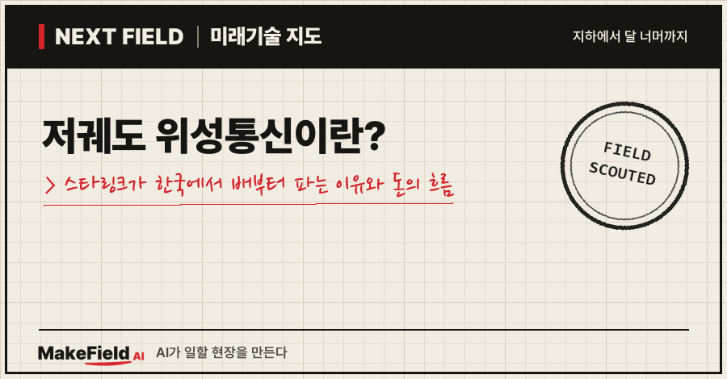
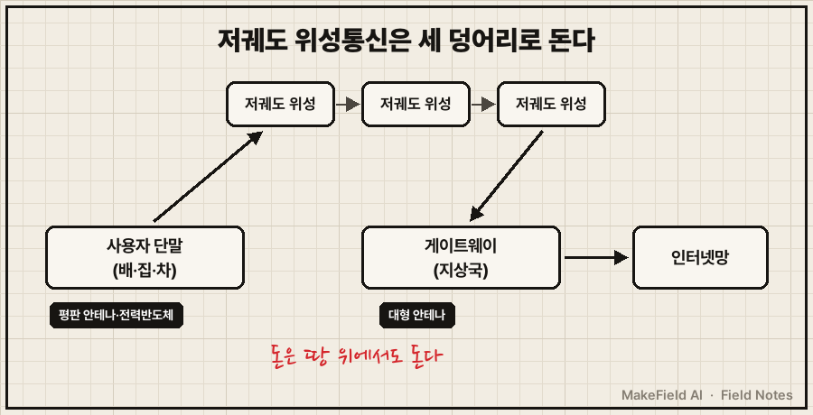
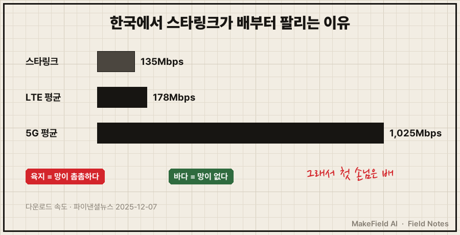
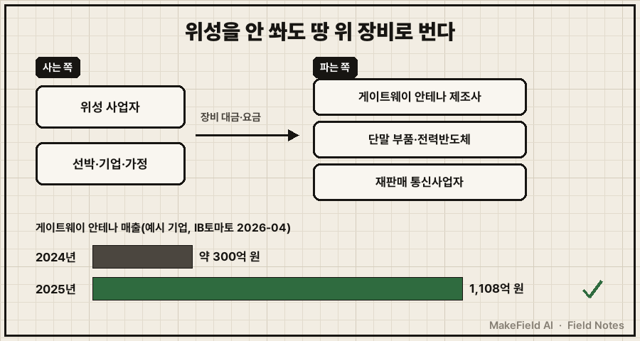

한 줄 요약: 저궤도 위성통신은 낮은 하늘에 위성 수천~수만 대를 띄워 지구 어디서나 인터넷을 잇는 방식이고, 한국에서는 망이 촘촘한 육지보다 망이 없는 바다(선박)에서 먼저 팔리고 있어요. 스타링크는 2025년 12월 한국 상용 서비스를 시작했는데, 첫 계약은 해운사·선박관리사 같은 기업 고객이었습니다(파이낸셜뉴스, 2025-12-07).
"스타링크가 한국에 들어왔다는데, 집 인터넷을 바꿀 만한가?" 궁금했던 분, 그리고 하늘 위 위성보다 땅 위 장비에서 누가 돈을 버는지 알고 싶은 분을 위한 글입니다. 2026년 11월 기준 공개 기사와 발표 자료로 정리했어요.
1. 저궤도 위성통신이란 무엇인가요
저궤도 위성통신이란 지상에서 비교적 가까운 낮은 궤도에 많은 위성을 띄워, 위성끼리 이어 달리며 인터넷을 전달하는 통신 방식이다. 위성이 가까우니 신호가 빨리 오가지만, 위성 한 대가 비추는 땅이 좁아 수천 대를 띄워야 빈틈이 없어요.
💡 저궤도(LEO) 위성 — 높은 하늘에 멈춘 듯 떠 있는 기존 방송·통신 위성보다 훨씬 낮게, 빠르게 지구를 도는 위성. 릴레이 주자처럼 여러 대가 번갈아 신호를 넘겨준다.
이 통신은 세 덩어리로 이루어져요. 하늘의 위성, 집·배에 붙는 사용자 단말, 그리고 위성과 땅의 인터넷망을 잇는 게이트웨이(지상국)입니다.
💡 사용자 단말 — 위성과 전파를 주고받는 안테나+모뎀 한 세트. 스타링크에서는 '접시'라고 부르는 납작한 안테나와 공유기다.
💡 게이트웨이(지상국) — 위성과 땅의 인터넷망을 연결하는 대형 안테나 기지. 단말이 '집 전화기'라면 게이트웨이는 '전화국'이다.

그림을 글로 옮기면, 사용자 단말 → 위성 → 게이트웨이 → 인터넷 순서로 신호가 흘러요. 이 글이 주목하는 건 아래 두 칸, 즉 단말과 게이트웨이입니다.
단말 안테나도 크게 바뀌었어요. 통신업계 관계자는 기존 정지궤도 위성용 안테나가 지름 1m 이상, 무게 100kg 이상인 반면 스타링크 안테나는 소형 선박에도 달 수 있을 만큼 작고 가볍다고 설명했습니다(파이낸셜뉴스, 2025-12-07).
💡 평판 안테나(위상배열 안테나) — 접시를 기계로 돌리지 않고, 수백 개 작은 안테나 소자의 신호 타이밍을 전자적으로 조절해 빔 방향을 바꾸는 납작한 안테나. 빨리 지나가는 저궤도 위성을 따라가는 데 쓴다.
2. 왜 지금 뜨나요 — 하늘엔 수만 대, 한국 위성은 0기
세계는 이미 수만 대 경쟁에 들어갔고, 한국은 통신서비스용 저궤도 위성이 아직 한 대도 없다. 파이낸셜뉴스가 보도한 해외 위성망 규모는 아래와 같아요(파이낸셜뉴스, 2026-10-05).
| 사업자·국가 | 현재 | 계획 |
|---|---|---|
| 스페이스X(스타링크) | 약 1만 1,000기 | 4만 2,000기 |
| 원웹 | 약 650기 | 6,300기 |
| 아마존 | 약 390기 | 3,200기 |
| 중국 궈왕 | — | 1만 2,992기 추진 |
| EU IRIS² | — | 290기·106억 유로 |
| 한국 | 0기 | 2030년 2기 발사(R&D) |
(출처: 파이낸셜뉴스, 2026-10-05)
💡 IRIS²(아이리스 스퀘어) — EU가 미국·중국에 기대지 않으려고 만드는 자체 보안 위성통신망. '통신 주권' 사업이다.
한국 정부의 저궤도 위성통신 연구개발 총사업비는 3,224억 원(국비 3,004억 원·민간 220억 원)이고, 2030년 위성 2기를 쏘는 계획이에요. 한국형 위성망은 128~512기 시나리오가 거론되며, 256기 운용에 약 7조 4,000억 원이 들 것으로 추정됐습니다(파이낸셜뉴스, 2026-10-05). 뉴시스는 최대 512기 안의 사업비를 14조 2,586억 원(제작·발사·5년 운용 포함), 2035년 완성 방침으로 보도했는데, 이는 세 가지 안을 검토하는 단계예요(뉴시스, 2026-07-21).
3. 한국에서는 왜 배부터 팔리나요
육지에서는 스타링크가 LTE보다 느리고, 바다에는 그 LTE조차 없기 때문이다. 한국 스타링크 가정용 요금은 월 8만 7,000원에 장비비 55만 원이 따로 들고, 다운로드 속도는 135Mbps로 국내 LTE 평균(178Mbps)보다 느리며 5G 평균(1,025Mbps)과는 차이가 커요(파이낸셜뉴스, 2025-12-07).

그림 내용을 글로 옮기면, 속도만 놓고 보면 육지 가정에는 매력이 크지 않다는 거예요. 기사도 업계의 시각을 "가정집이 매력을 느끼지 못할 것"이라고 전했고, 낚싯배·요트·캠핑카 같은 특수 수요를 가능성으로 꼽았습니다(파이낸셜뉴스, 2025-12-07).
그래서 첫 계약은 기업용이었어요. 기업용은 국내 통신사업자가 재판매하는데, SK텔링크가 해운사 팬오션과 해상용 공급 계약을, KT샛이 선박관리사 KLCSM·롯데물산과 계약했습니다. 용도는 선박 운항 관리, 자율운항 실증 통신망, 롯데월드타워 방재 통신망 등이에요(파이낸셜뉴스, 2025-12-07). 기업명은 공개 보도에 나온 예시입니다.
💡 리셀러(재판매 사업자) — 본사 서비스를 받아 자기 이름으로 파는 판매사. 한국 기업용 스타링크는 SK텔링크·KT샛이 이 역할을 맡았다.
4. 돈의 흐름 — 위성 말고 땅 위 장비에서 누가 버나요
위성은 소수의 거대 사업자가 쏘지만, 단말 부품과 게이트웨이 안테나는 여러 나라 공급사가 나눠 판다. 사는 쪽은 위성 사업자(게이트웨이·단말 대량 구매)와 그 서비스를 쓰는 선박·기업·가정이고, 파는 쪽은 안테나·부품 제조사예요. 아래 기업명은 산업 구조를 설명하기 위한 예시이며 투자 판단과 무관합니다.

그림을 글로 풀면, 위성 사업자는 게이트웨이와 단말을 대량으로 사고, 선박·기업·가정은 월 요금을 냅니다. 그 돈이 안테나 제조사·부품사·재판매 사업자로 나뉘어 흘러가요.
| 칸 | 누가 사나 | 누가 파나(공개 보도 예시) | 확인된 규모 |
|---|---|---|---|
| 게이트웨이 안테나 | 위성통신 사업자 | 인텔리안테크(한국 위성 안테나 제조사) | 게이트웨이 매출 2024년 약 300억 원 → 2025년 1,108억 원(IB토마토, 2026-04) |
| 단말 전력반도체 | 위성 사업자의 단말 생산 | 파워큐브세미(DB하이텍 공정 활용) | 스페이스X에 첫 양산품 공급, 물량·금액 비공개(유니콘팩토리, 2026-07-06) |
| 서비스 판매 | 선박·기업·가정 | 국내 재판매 통신사업자 | 가정용 월 8만 7,000원·장비 55만 원(파이낸셜뉴스, 2025-12-07) |
인텔리안테크의 2025년 연결 매출은 3,196억 원(전년 대비 24.0% 증가), 영업이익은 120억 원으로 흑자 전환했다고 보도됐어요. 다만 게이트웨이는 단가가 높고 물건을 넘긴 뒤 대금을 받기까지 기간이 긴 B2B 구조라, 같은 기사는 현금은 빠지고 빚은 늘었다는 그늘도 함께 짚었습니다(IB토마토, 2026-04-07). 파워큐브세미의 전력반도체는 스타링크 지상 단말에서 전력 변환과 보호를 맡는다고 밝혔어요(유니콘팩토리, 2026-07-06).
💡 전력반도체 — 전기를 켜고 끄거나 전압을 바꿔 장비에 알맞게 넣어 주는 반도체. 단말 안의 '전기 관리인'이다.
💡 파운드리 — 다른 회사가 설계한 반도체를 대신 만들어 주는 위탁 생산 공장. DB하이텍이 한국의 대표 예시다.
평판 안테나 쪽 병목은 '교정'이에요. 계측 장비 회사 키사이트는 복잡한 위상배열 안테나 교정을 몇 시간~며칠에서 실험실 기준 몇 분으로 줄이는 솔루션을 내놨다고 발표했습니다(키사이트, 2023-10-03, 회사 주장).
💡 교정(calibration) — 수백 개 안테나 소자가 정확히 같은 박자로 움직이도록 하나하나 맞추는 작업. 오래 걸리면 생산 속도가 묶인다.
5. 언제 오나요, 한계는 무엇인가요
해외 서비스는 이미 왔지만, 한국 독자 위성망은 2030년 시험 위성 2기 이후에야 윤곽이 잡힌다. 한국형 위성망의 연도별 구축 일정은 아직 정해지지 않았고, 최대 14조 원대 안은 검토 단계예요(파이낸셜뉴스 2026-10-05, 뉴시스 2026-07-21).
반대 근거도 분명합니다. 한 회사 망에 기대면 그 회사가 멈출 때 같이 멈춰요. 2025년 7월 24일 스타링크는 약 2시간 30분 동안 세계적으로 장애를 겪었는데, 원인은 위성이 아니라 핵심 네트워크를 운영하는 내부 소프트웨어 실패였습니다. 정점 때 접속은 평소의 약 16% 수준(NetBlocks 측정)으로 떨어졌고, 우크라이나 군 통신과 해운·광업·비상 대응 운영에도 차질이 보고됐어요(Telecoms Tech News, 2025-07-28). 한국이 '통신 주권'을 이유로 자체 위성망을 검토하는 배경도 여기에 있습니다.
| 구분 | 이미 온 것 | 아직 안 온 것 |
|---|---|---|
| 서비스 | 스타링크 한국 상용화(2025-12) | 한국 독자 위성망 서비스 |
| 수요 | 선박·방재·특수 수요 | 일반 가정 대체(속도·가격 불리) |
| 공급 | 한국 기업의 게이트웨이 안테나·단말 부품 수출 | 국내 위성용 단말 대량 수요(2030년 2기 이후) |
자주 묻는 질문(FAQ)
Q. 스타링크로 집 인터넷을 바꾸면 더 빠른가요?
A. 한국에서는 아니에요. 보도된 다운로드 속도 135Mbps는 국내 LTE 평균 178Mbps보다 느리고, 월 8만 7,000원에 장비비 55만 원이 별도입니다(파이낸셜뉴스, 2025-12-07).
Q. 한국에는 저궤도 통신위성이 있나요?
A. 통신서비스용은 0기예요. 연구개발 사업으로 2030년 2기 발사를 계획하고 있습니다(파이낸셜뉴스, 2026-10-05).
Q. 위성을 안 쏘는 한국 기업도 이 시장에서 돈을 버나요?
A. 땅 위 장비에서 벌어요. 게이트웨이 안테나 매출이 1년 새 약 300억 원에서 1,108억 원으로 늘어난 사례(IB토마토, 2026-04-07), 스타링크 단말에 전력반도체를 공급한 사례(유니콘팩토리, 2026-07-06)가 공개됐습니다.
오늘의 용어 정리
- 저궤도(LEO) 위성 — 낮은 궤도를 빠르게 도는 위성. 여러 대가 번갈아 신호를 넘긴다.
- 사용자 단말 — 위성과 전파를 주고받는 안테나+모뎀 한 세트.
- 게이트웨이(지상국) — 위성과 땅의 인터넷망을 잇는 대형 안테나 기지.
- 평판 안테나(위상배열 안테나) — 전자적으로 빔 방향을 바꾸는 납작한 안테나.
- IRIS² — EU의 자체 보안 위성통신망 사업.
- 리셀러(재판매 사업자) — 본사 서비스를 자기 이름으로 파는 판매사.
- 전력반도체 — 전기를 켜고 끄고 전압을 바꿔 주는 반도체.
- 파운드리 — 남이 설계한 반도체를 대신 만들어 주는 위탁 생산 공장.
- 교정(calibration) — 안테나 소자 수백 개의 박자를 맞추는 작업.
하늘의 위성 경쟁은 몇몇 거대 사업자의 판이지만, 그 위성이 땅에 닿는 지점, 안테나와 부품에서는 다른 나라 공급사에도 자리가 생기고 있어요. 다음 Next Field에서도 또 다른 '다음 현장'을 가 볼게요. 여러분이라면 망이 끊기는 어떤 곳에 위성 인터넷을 가장 먼저 놓고 싶으신가요?
출처
[1] 파이낸셜뉴스(2026-10-05) — 한국 통신서비스용 저궤도 위성 0기, 연구개발 총사업비 3,224억 원(국비 3,004억·민간 220억), 2030년 2기 발사, 128~512기 시나리오·256기 약 7조 4,000억 원, 해외 위성망 규모(스페이스X·원웹·아마존·궈왕·IRIS²)
→ https://www.fnnews.com/news/202610051145171025
[2] 뉴시스(2026-07-21) — 한국형 저궤도 위성통신망 최대 512기 안 14조 2,586억 원(제작·발사·5년 운용), 2035년 완성 방침, 세 가지 안 검토 단계
→ https://www.newsis.com/view/NISX20260721_0003717232
[3] 파이낸셜뉴스(2025-12-07) — 스타링크 한국 상용화, SK텔링크–팬오션·KT샛–KLCSM·롯데물산 계약, 가정용 월 8만 7,000원·장비 55만 원, 다운로드 135Mbps(LTE 178·5G 1,025Mbps), 기존 정지궤도 안테나 1m·100kg 이상
→ https://www.fnnews.com/news/202512070905360350
[4] IB토마토(2026-04-07) — 인텔리안테크 게이트웨이 안테나 매출 2024년 약 300억 원 → 2025년 1,108억 원, 연결 매출 3,196억 원·영업이익 120억 원, 긴 대금 회수 구조로 현금 감소·차입 증가
→ https://newstomato.com/ReadNews.aspx?no=1296699
[5] 유니콘팩토리(2026-07-06) — 파워큐브세미 첫 양산 전력반도체 스페이스X 공급, 스타링크 지상 단말의 전력 변환·보호, DB하이텍 멀티 에피택시 공정, 물량·금액 비공개
→ https://www.unicornfactory.co.kr/article/2026070609193241613
[6] 키사이트(2023-10-03) — 위상배열 안테나 교정 시간을 몇 시간~며칠에서 실험실 기준 몇 분으로 단축하는 솔루션 출시(회사 발표)
→ https://www.businesswire.com/news/home/20231003729706/en
[7] Telecoms Tech News(2025-07-28) — 2025년 7월 24일 스타링크 세계 장애 약 2시간 30분, 원인=핵심 네트워크 내부 소프트웨어 실패, 접속 평소 약 16%(NetBlocks), 우크라이나 군 통신·해운 등 차질
→ https://www.telecomstechnews.com/news/starlink-global-outage-software-failure-2025/